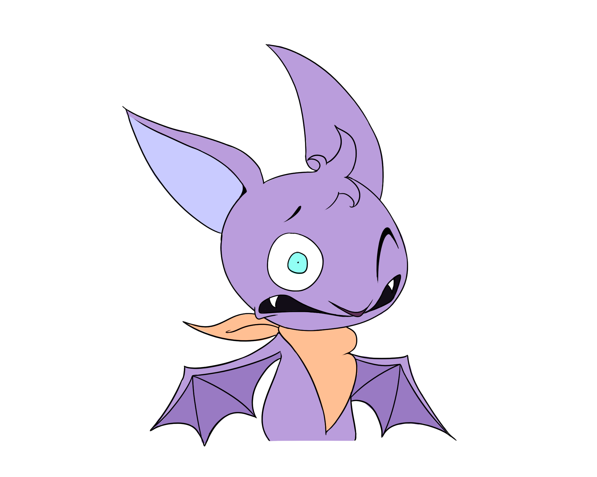
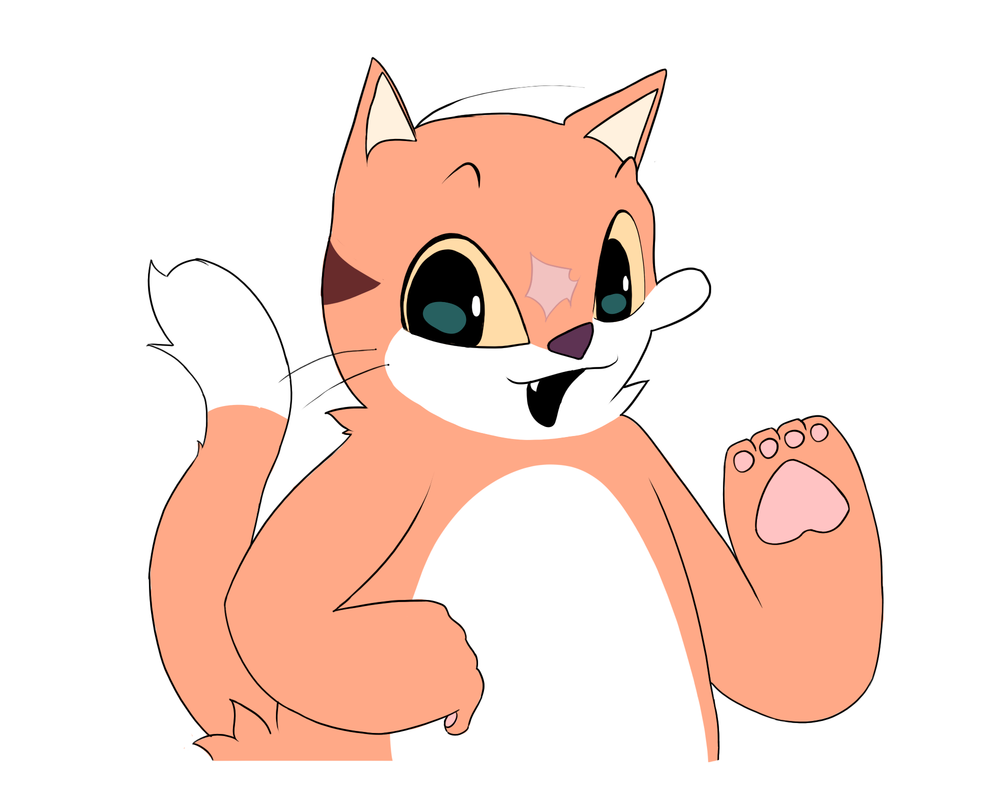

Dear detective!
It is with great pain that I ask you for your services.
I'm guard Miguel Ramos, and we're in big trouble.A while ago we found a dead Zino's Petrel in the Funhal's Ecological Park, his name was Azul, and currently we are looking for the perpetrator.
Here's a picture of the crime scene!
We were able to pin down 4 suspects so far, they are:

Avisa the Zino's Petrel
Zino's Petrel are some of the only few birds that regularly stay with a single mate for life. We went to their residence (a litteral hole in the ground) to find Azul's wife, only to find her distressed and histerical. She wouldn't respond to any of our questions, so we had to take her in for questioning.

Marco the Bat
Marco is a resident of the park. Appearently he knew the victim, and originally we were going to take him in for questioning, but a certain detail about him might have been connected to the mortal wound.
Brie, Mozza and Fetta the Mice

This group of mice has been a pain in our behinds for ta while. They have been caught for other crimes such as theft, but we belive that they might have had valid motive for the murder. These guys will eat anything, especially eggs, which they might have tried to steal from Azul.
Bolinhas the Cat

Not much is known about this one. This cute cat was found around the scene of the crime, not only that the first thing he did when we approached was run away. Due to this suspicious behaviour we have decided to take his statment.
Hopefuly you can help us out!
Signed,
Miguel Ramos
P.S. Included on this letter are special AR codes that can let you hear some of the statments made by the suspects, all you have to do is point them at your camera!